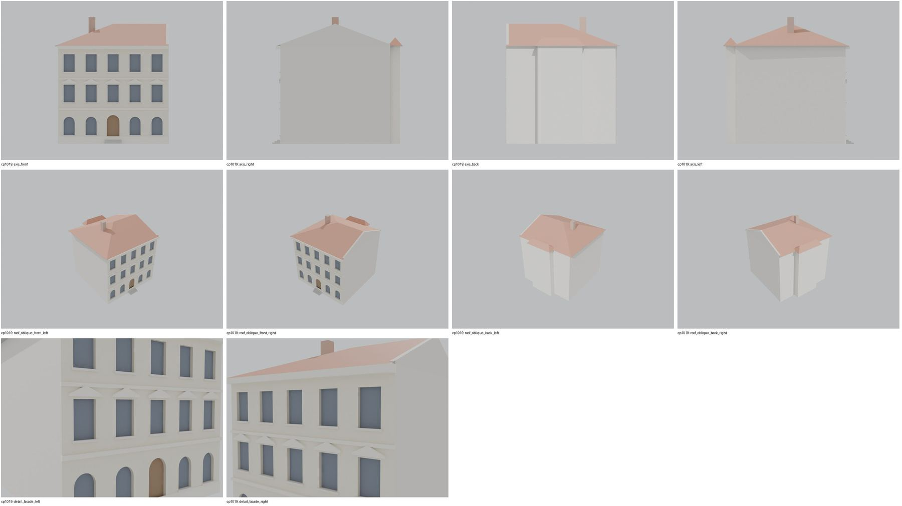
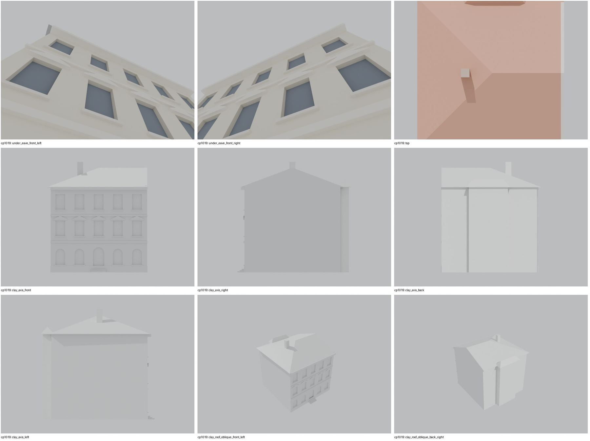
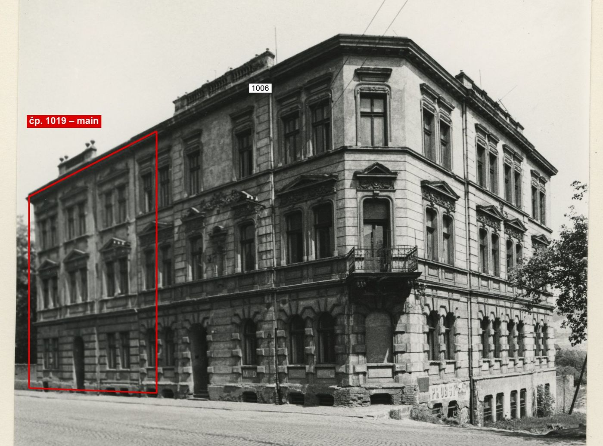
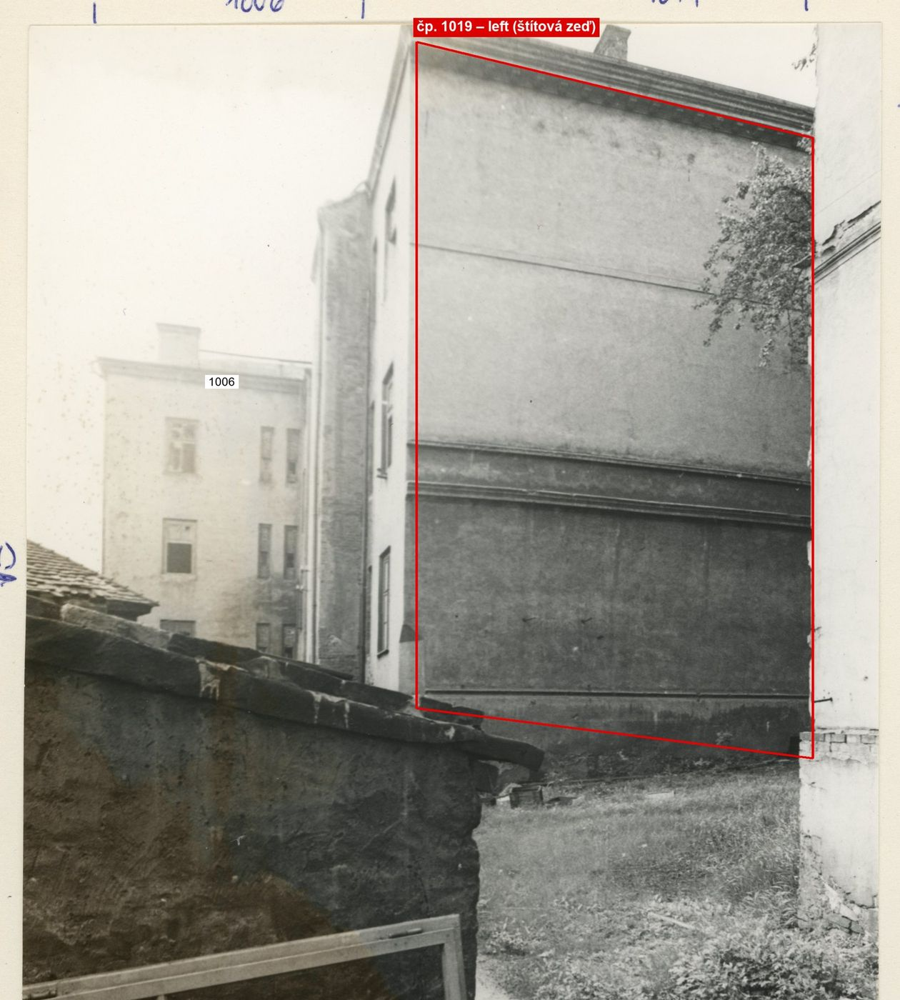

Identita domu
Severovýchodní (nižší orientační číslo) část třípodlažního dvojdomu „PROBST“: foto cp_1006,1019_001 má popisky „1019“ vlevo a „1006“ vpravo nad nárožím; plán cp_1006,1019_001: 879 | 1019/6 | 1006/7. POZOR: GIS má popisky obráceně (id 1521 „1006“ je SV, id 1522 „1019“ je JZ nároží) – model sleduje archivní popisky a pořadí orientačních čísel; GIS id použit podle polohy.
Použité prameny: cp_1006,1019_001 PLANE+PHOTO; cp_1006,1019_002 PHOTO; cp_1006_001 PHOTO (ulice s tramvají).
GIS: GIS id 1521 (175 m², 8 vrcholů) – poloha SV; popisek v GIS „1006“ (rozpor). V oblasti „Cs_Armady“ je dům veden podruhé se stejnými přílohami.
Prameny (5 příloh)
Všechny přílohy domu v databázi Libuše, každá otevřená a zapsaná v plan_search.json. Stav rešerše plánů: found; situační/střešní náčrt (ruční, nekótovaný, PLANE,BW) – není stavební výkres; půdorysné rozměry z GIS nebo odhad. Kliknutím otevřete větší náhled.

situační náčrt
SHA-256 d2d338dcec4e…

fotografie
SHA-256 37c5ee4cd478…

fotografie
SHA-256 30127c15e2c5…

archivní karta (rub) · výřez textu
SHA-256 cd299f8c851f…

archivní karta (rub) · výřez textu
SHA-256 c021b4eb85a0…
Model
| Revize modelu | r4 (zachované revize: r1, r2, r4) |
|---|---|
| Poloha | GIS půdorys id 1521 |
| Šířka průčelí | 13,08 m |
| Výška okapu | 11,60 m (odhad) |
| Podlaží | 3 |
| Střecha podle pramenů | nízká valba |
| Střecha v modelu | valbová / sedlová (hřeben, valby, štíty) |
| Otvory | 15 |
| Vikýře / vedlejší hmoty | 0 / 0 |
| Polygonů | 428 |
Zdroje rozměrů, jak jsou zapsány v plánu modelu
| Rozměry | GIS id 1521 polygon (rect 13.08 x 13.0 + rear bump); archive label 1019 (GIS label 1006 - conflict recorded) |
|---|---|
| Průčelí | photo cp_1006,1019_001 (left part): 3 storeys, rusticated ground floor with arched windows, pediments on the 1st floor, entrance |
| Střecha | low hip, continuous with 1006 (gable at the party wall) |
Kontrola r4: brána geometrie a 19 pohledů
Automatická brána (uzavřené podkroví, krytí střechou, UV, síť, počty otvorů proti fotografii s rámečkem) a 19 renderů: čtyři osy, čtyři šikmé pohledy na střechu, dva detaily průčelí, dva pohledy pod přední okap, pohled shora a šest pohledů bez barev materiálů. Stav: prošla.


Nálezy a opravy
- 3 podlaží, bosované přízemí s obloukovými okny a vstupem uprostřed, frontony v 1. patře
- štít u společné zdi s 1006
- zadní výstupek se stříškou
- osy = hypotéza (snímek silně zkrácený)
- komín končil pod hřebenem a nebyl vidět – zvýšen na hřeben + 0,8 m, nutná přestavba
- po přestavbě 25. 10.: komín nad hřebenem viditelný; ostatní pohledy beze změny
Revize r4: doklad fasád a změny
Okna a dveře se počítají na fotografii s červeným rámečkem po dělicích zdech domu. Řádky oken jsou zdola nahoru; „hypotéza“ jsou otvory, které na snímku vidět nejsou.
| Fasáda | Okna po podlažích | Hypotéza (id otvorů) | Poznámka |
|---|---|---|---|
| main | – + dveře 1 | G1, G2, G4, G5, U1, U2, U3, U4, U5, T1, T2, T3, T4, T5 | čitelný jen vstup uprostřed; okna (5 os) jsou hypotéza – průčelí je na jediném snímku silně zkrácené |


cp_1006,1019_001: průčelí 1019 je vzdálený, silně zkrácený konec snímku; čitelné jsou 3 podlaží, bosované přízemí a vstup s půlkruhovým záklenkem uprostřed (6,65 m z projektivního převodu celé fronty 1019+1006); nad okny 1. patra frontony, místy sdružená okna. Počet os nelze spolehlivě odečíst – okna modelu (5 os) zůstávají hypotézou.


cp_1006,1019_002: levá štítová zeď 1019 do zahrady bez oken (v modelu bez otvorů).
Změny proti r2/r3
- closed attic, eave closures, gables along the roof underside, flat-roof covering slab, names for tools/most_qa (z4_post.py)
- gate pass 2: gable end(s) follow the shared wall line of the footprint, no verge overhang at the party wall: right = party wall with 1006
- gate pass 2: rear jog (5.25 m2 of wall top without roof in r4 pass 1) gets its own hip roof
- visual QA: 1 chimney(s) ended below the ridge and were hidden in the roof; raised to ridge + 0.8 m (photos show the chimneys above the roof; height = hypothesis)
Hypotézy
Vše níže je model_hypothesis, provisional, locked: false.
- rozpor popisků GIS × archiv – provisional
- výšky odhad (4,0/3,6/3,6)
- GIS/archive label conflict (see plan_search.json)
- all storey heights, opening sizes and roof pitches are estimates from photographs (model_hypothesis, provisional, locked=false)
- rear jog of the GIS footprint (x 4.05-9.37, 1.2 m deep, probably a staircase) covered by its own small hip roof; not visible on any photo (model_hypothesis, provisional, locked=false)
Soubory
- Model čp. 1019, GLB
- Pracovní složka: F:\MOST\output\zatecka_street_claude_2026-10-17\houses\cp1019\
plan_search.json,geometry_plan.json,README.md,texture_handoff_spec.json,r4/cp_1019_G_r4.blend,r4/qa/qa_review.json, rámečkyframes/cp1019_*